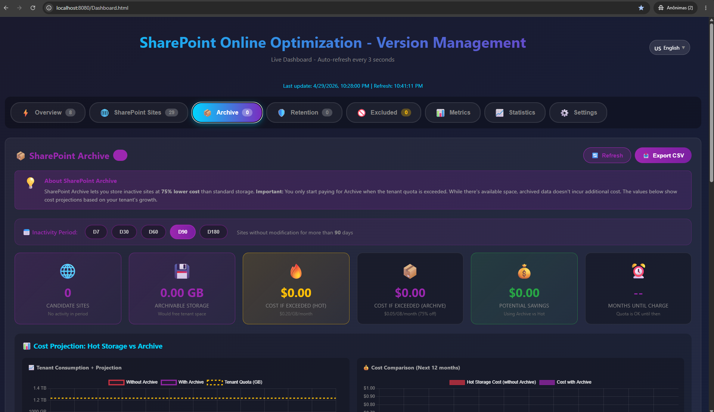
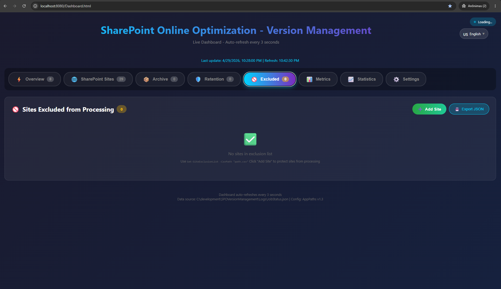
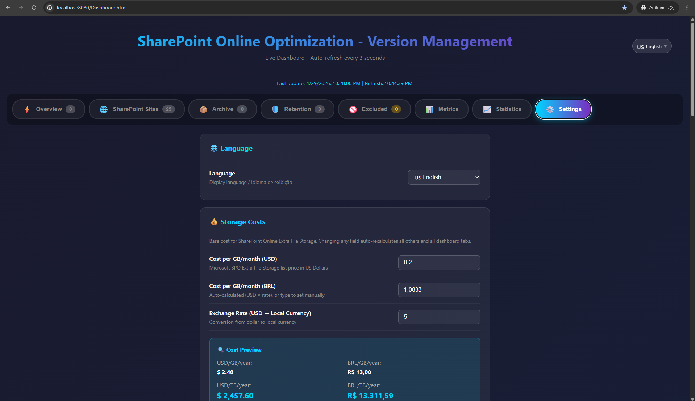
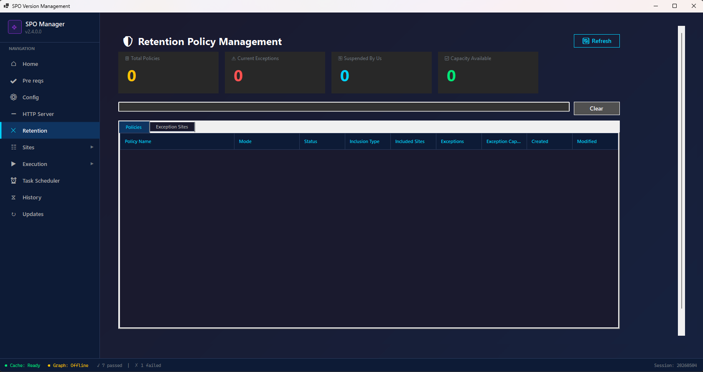
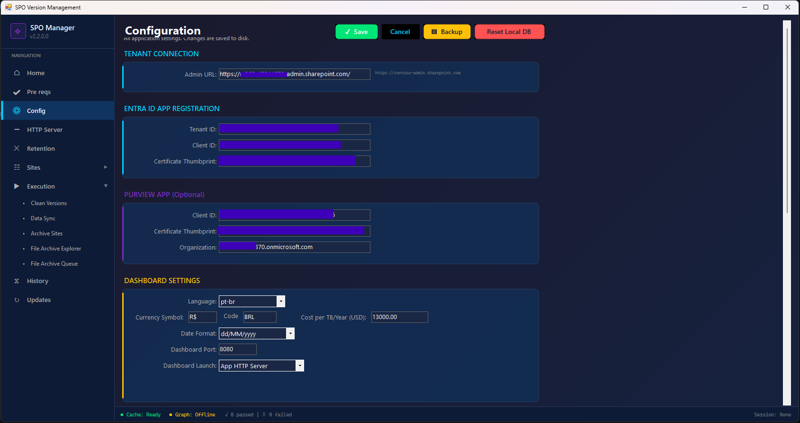
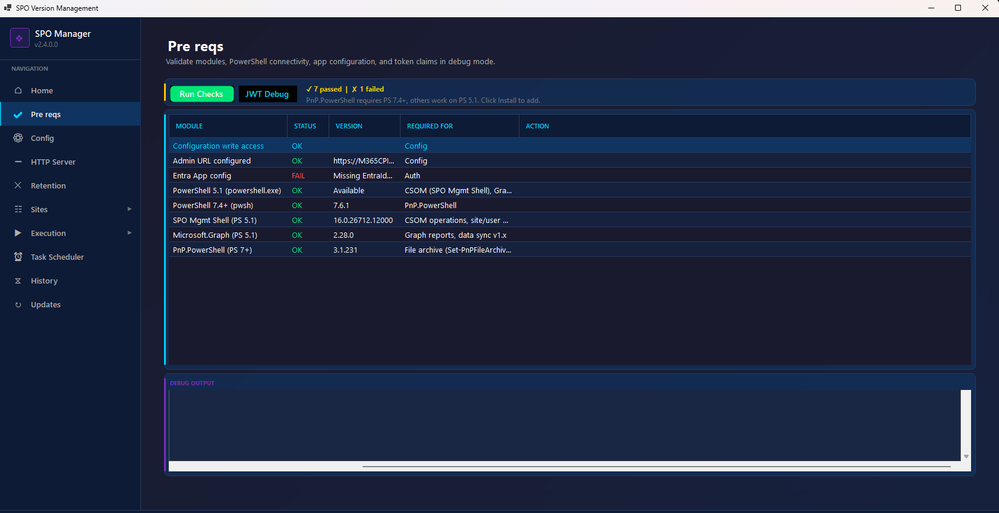

Interactive Dashboard & Analytics
Real-time visibility into your SharePoint storage, version cleanup progress, and cost savings — all in your browser

Dashboard Overview
Live overview with active jobs, queued sites, completed operations, space freed, and full tenant storage breakdown with projected cleanup savings.

Windows App — Home Dashboard
Desktop app home panel: session summary, tenant storage metrics (quota, used, available, cost), storage trend chart, worldwide impact, and recent executions.

Tenant Storage Metrics
Detailed storage breakdown: tenant quota (TB), storage used, available space, total sites, released storage per session, and percentage released.

Execution Engine — Clean Versions
Configure version policies, delete modes (by count or age), concurrent jobs (1-10), batch size, retention policy handling. Real-time console and progress tracking.
View More Screenshots (Dashboard & GUI)

SharePoint Sites List
Complete site catalog with storage size, version counts, status badges, and filtering. Manage thousands of sites at a glance.

Retention Policy Management
View, suspend, and resume compliance retention policies that block version cleanup. Full lifecycle control.

Archive Candidates
Identify inactive sites consuming storage. Queue candidates for archival based on last activity and storage consumption.

Excluded Sites
Protect critical sites from version cleanup. Manage exclusion lists to ensure important content is never touched.

Dashboard Settings
Configure credentials, reexecution intervals, language, telemetry, and auto-refresh settings.

GUI — Site Catalog
High-performance virtual grid handling thousands of sites. Search, filter, queue management, and CSV export.

GUI — File Archive Explorer
Search SharePoint for large files by extension (video, audio, CAD, archives). Graph API powered discovery of storage hogs.

GUI — Retention Policies
Desktop panel for managing retention policies: view status, suspend/resume, track exceptions, and capacity.

GUI — Configuration
Configure Entra ID app credentials, admin URLs, telemetry settings, and connection parameters.

GUI — Prerequisites Check
Automatic validation of PowerShell versions, modules, .NET framework, network connectivity, and certificate availability.